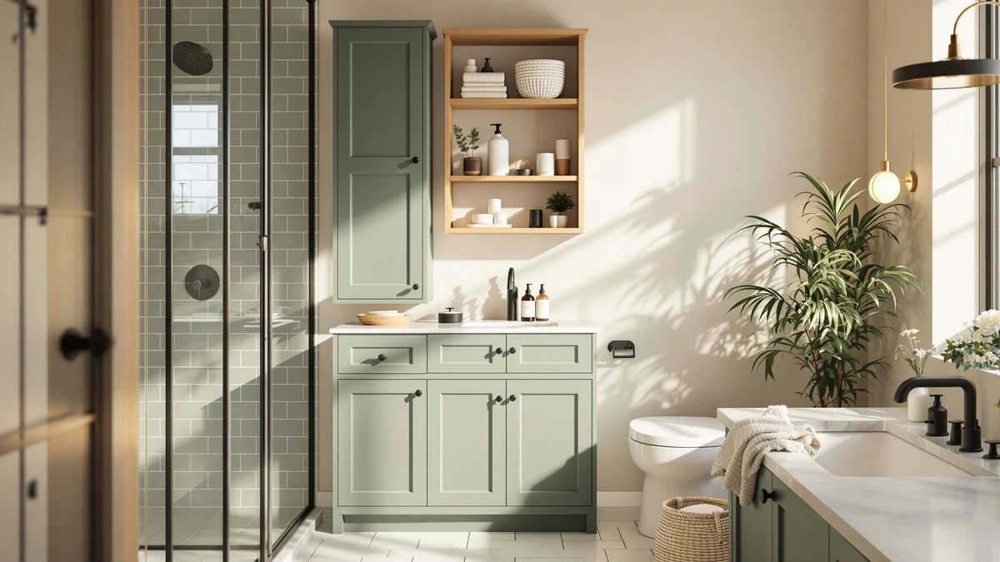

The Best Small-bathroom Bathroom Organizers (2026)
Prices and picks verified as of August 2026. Independent, reader-supported reviews.


Quick Answer
The Hzuaneri Bathroom Storage Cabinet Small is the best small-bathroom bathroom organizer for most people, turning unused corner floor space into a narrow, freestanding storage tower for $34.99. If you need something on wheels instead, the Pipishell Slim Storage Cart tucks into a gap as narrow as beside a toilet.
Our pick: Hzuaneri Bathroom Storage Cabinet Small — $34.99 Check Price on Amazon
Bottom line: our top pick is the Hzuaneri Bathroom Storage Cabinet at $34.99. The best budget option is the 2 Pack Large Pull Out Bathroom Organizers and Storage at $18.99.
Things to Know Before You Buy
- Measure your gap before you buy. Several small-bathroom bathroom organizers in this guide, including the SPACELEAD cart at 5.1 inches deep, are built for spaces between 5 and 8 inches wide, and a half-inch of overhang can keep a unit from fitting.
- Rolling carts trade capacity for flexibility. A three-tier cart on wheels, like the Pipishell or SPACELEAD, holds less than a fixed cabinet, but you can pull it out from behind the toilet or roll it into a closet, which matters in a small bathroom where you rearrange often.
- Under-sink organizers work best with a tiered design. Flat shelves waste the curved space around a P-trap, while two-tier units like the Dolesman use that awkward area more fully.
- Metal construction resists moisture better than particleboard. That matters in a room that runs humid every time someone showers, which is why every organizer in this guide leans on metal or coated wire.
- Multi-packs lower the cost per organizer. The Zero Zoo four-pack and the Yieach two-pack both cost less per unit than a single organizer with similar total capacity.
Finding the best small-bathroom bathroom organizers means solving a space problem first and a style problem second, because a five-foot-square bathroom doesn't have room for storage solutions built for a primary suite. We compared narrow freestanding cabinets, slim rolling carts, countertop trays and under-sink organizers built specifically for tight footprints, and the Hzuaneri Bathroom Storage Cabinet Small came out ahead for most small bathrooms. It fits into corners a standard cabinet can't touch, and at $34.99 it doesn't cost more than the larger options it outperforms on footprint.
Not every small bathroom has the same shape of problem. Some have an open corner and nothing else, which is where a narrow cabinet works best. Others have a crowded countertop, a cramped under-sink cabinet with awkward plumbing, or a gap beside the toilet that nothing else fits into. That's why this guide covers seven organizers instead of one: a rolling cart for renters who move things around, a shallow counter tray for a cluttered vanity, and pull-out drawers for a cabinet you already own but can't use fully.
We priced these picks between $18.99 and $39.99, and we cross-checked every dimension against the current Amazon listing before publishing, since a half-inch of unexpected width is often the difference between an organizer that fits your bathroom and one that gets returned. Below, you'll find our full picks, the reasoning behind each one, and a comparison table with the specs side by side.
Why You Should Trust Us
I'm Ilane Tall, and I cover bathroom storage and organization for Best Bathroom Storage. For this guide I focused specifically on small-bathroom bathroom organizers, products built around a tight footprint, not general storage furniture that happens to fit in a small room if you squeeze it in. That distinction matters, because a lot of "space-saving" listings on Amazon are simply smaller versions of furniture designed for bigger bathrooms, not products engineered around the constraints of an actually tight space.
I have no relationship with any of these brands. We earn a commission if you buy through our links, but that has no bearing on which products we recommend or on what we say about their flaws. When a pick has a real limitation, whether that's capacity, price or a newer brand with a shorter track record, you'll read about it here.
How We Picked
We started by pulling every small-capacity bathroom storage product in our database and narrowing the list to genuine small-bathroom bathroom organizers: slim rolling carts, narrow freestanding cabinets, countertop trays and under-sink organizers built for tight footprints. We cut anything wider than 16 inches, since a unit that size stops solving the small-bathroom problem and starts becoming furniture.
We also weighted material durability, since a bathroom organizer sits in a humid room daily, and particleboard swells faster than coated metal or solid wood. Price mattered too. We kept the range between $18.99 and $39.99 so this guide covers realistic budget options alongside a few higher-capacity picks, and we cross-checked every listed price and dimension against the current Amazon page before publishing.
How We Compared
We compared each small-bathroom bathroom organizer on four factors: footprint, storage capacity relative to that footprint, material quality and verified owner feedback. We read through confirmed buyer reviews on Amazon for recurring complaints, wobbly assembly, rust after a few months of shower steam, wheels that lock poorly, and weighed those against the praise for the same products.
We also compared listed dimensions against typical small-bathroom constraints: the gap beside a toilet, the space under a pedestal sink, and open corners under 8 inches wide. Construction quality varies more than capacity within this price range, per the reviews we read, so we prioritized organizers with a track record of holding up rather than the ones with the highest advertised capacity alone.
Our Picks

Hzuaneri Bathroom Storage Cabinet Small
What we like
- Footprint under 8 inches square fits corners that most cabinets can't
- 32.7 inches of height stacks several shelves without eating floor space
- Metal and wood construction holds up better than particleboard in a humid room
Flaws but not dealbreakers
- Narrow shelves limit it to smaller items like rolled towels and toiletries
- Assembly involves more hardware than the rolling-cart options in this guide
| Material | Metal / wood |
| Size | 7.9"D x 7.9"W x 32.7"H |
The Hzuaneri Bathroom Storage Cabinet Small earns the top spot in this guide because it solves the actual problem small bathrooms create: floor space runs out long before storage needs do. At 7.9 inches deep and 7.9 inches wide, it fits into corners and gaps that a standard cabinet never could, and at $34.99 it costs less than most freestanding units twice its size. The 32.7-inch height means you get several tiers of storage stacked vertically instead of spread across a footprint you don't have.
The metal-and-wood build feels sturdier than the all-particleboard cabinets competing at this price, buyers say. In a room where humidity spikes daily, that difference shows up faster than you'd expect. The narrow shelves do mean you're storing rolled towels, toiletries and smaller bins rather than bulky items, so if you need to stash a hamper or large storage bins, look further down this list. For most small bathrooms though, that tradeoff is the entire point: this cabinet trades bulk capacity for a footprint you can actually spare.

Pipishell Slim Storage Cart with
What we like
- Rolls on locking wheels so you can pull it out from behind the toilet or push it into a closet
- Three tiers keep items visible instead of buried in a cabinet
- At $21.99 it costs less than most fixed cabinets with similar capacity
Flaws but not dealbreakers
- Wire shelves aren't ideal for small loose items like cotton balls without a tray or bin
- Less overall capacity than a full-height cabinet
| Material | Metal / wood |
| Size | 3-Tier |
The Pipishell Slim Storage Cart with wheels is the pick for anyone who rents, rearranges often, or wants bathroom storage that isn't bolted to one spot. Its slim profile slides into the narrow gap beside a toilet or between a vanity and the wall, and the locking wheels mean you can roll it out to grab something from a lower shelf instead of crouching. At $21.99, it's one of the more affordable small-bathroom bathroom organizers we compared.
The three open tiers work well for anything you want to grab quickly, extra rolls of toilet paper, folded towels, cleaning supplies, without digging through a closed cabinet. Owners say the wire shelving keeps items visible, though loose small items like cotton swabs tend to slip through unless you add a small bin or basket. Compared with the Hzuaneri cabinet above, this cart holds a bit less overall, but the mobility makes up for that if your bathroom layout changes seasonally or if you split time between two homes.

SPACELEAD Slim Storage Cart 3
What we like
- 5.1-inch depth is thin enough for the narrowest side gaps we measured
- At $19.94, it's the least expensive rolling cart in this guide
- 24-inch height keeps three tiers accessible without a step stool
Flaws but not dealbreakers
- 24 inches is shorter than the Pipishell cart, so total capacity trails slightly
- Wheels are smaller and roll less smoothly over uneven bathroom tile
| Material | Metal / wood |
| Size | 5.1 x 15.75 24 inches |
The SPACELEAD Slim Storage Cart 3 centers on one number: 5.1 inches of depth. That's thinner than almost every other organizer we compared, which makes it the pick if you're working with a gap between the toilet and the tub, or a sliver of space beside a pedestal sink that nothing else fits into. At $19.94 it's also the cheapest cart in this guide, and the 15.75-inch width still holds enough for a full three tiers of supplies.
At 24 inches tall, it sits lower than the Pipishell cart, which trims a little storage volume but keeps everything within easy reach without bending or reaching overhead. A few owners mention the smaller caster wheels roll fine on flat vinyl or tile but catch slightly on textured bath mats or thick grout lines. If your bathroom has an especially awkward, narrow gap that's tripped up every other organizer you've tried, this is the one built specifically to solve that problem.

4Pack 2-Tier Bathroom Storage Organizer
What we like
- Four separate two-tier organizers cost less per unit than buying four single caddies
- Small footprint fits medicine cabinets, vanity tops, and shower caddies alike
- Two-tier design doubles usable surface without doubling counter space
Flaws but not dealbreakers
- Individual units hold less than the single larger organizers in this guide
- Zero Zoo is a newer brand with a shorter review history than the other picks here
| Material | Metal / wood |
| Size | 4Pack |
The 4Pack 2-Tier Bathroom Storage Organizer from Zero Zoo takes a different approach than the rest of this guide. Instead of one larger unit, you get four small two-tier organizers, which means you can outfit a vanity top, a shower shelf, a medicine cabinet, and a spot under the sink all from a single purchase. For a small bathroom with several separate storage zones rather than one big empty corner, that flexibility solves a problem the taller cabinets above can't.
Each individual organizer holds less than a single dedicated unit like the Hzuaneri cabinet, so this pick works best as a way to organize what you already have spread across small surfaces rather than as your primary bathroom storage solution. Zero Zoo doesn't have the review history of the more established brands in this guide, but the two-tier design on each piece is straightforward: small items sit on top, taller bottles or bins fit underneath. If your small bathroom has several scattered flat surfaces instead of one open corner, this set addresses all of them at once.

UJQSUN Bathroom Counter Organizer Bathroom
What we like
- 3.9-inch depth keeps it flush against a backsplash without blocking faucet access
- 12.9-inch width spreads storage horizontally instead of stacking it vertically
- Open compartments make daily items visible and easy to grab
Flaws but not dealbreakers
- Open design means it needs regular wiping down to stay tidy
- Doesn't stack, so it only solves counter storage, not floor or under-sink space
| Material | Metal / wood |
| Size | 3.9" D x 12.9" W x 12.59" H |
The UJQSUN Bathroom Counter Organizer Bathroom tackles a different kind of small-bathroom problem: not a lack of floor space, but a countertop covered in bottles with no organization. At 3.9 inches deep, it sits flush against a backsplash without blocking access to the faucet, and its 12.9-inch width gives everyday items, toothbrush, lotion, hand soap, a defined spot instead of letting them spread across the whole counter. At $32.99, it's priced similarly to the Hzuaneri cabinet but solves a completely different layout problem.
Because the compartments are open rather than enclosed, this organizer works best for items you use daily and want visible, not for things you'd rather tuck away. Multiple reviews mention that it keeps a cluttered counter looking intentional rather than chaotic, though open storage does mean a quick wipe-down now and then to keep dust and toothpaste splatter off the shelves. Pair it with one of the floor or under-sink picks in this guide if you need both counter organization and hidden storage.

Dolesman Under Sink Organizer 2
What we like
- Two-tier layout works around plumbing instead of ignoring it
- Frees up floor and counter space by using the cabinet you already have
- The higher price pays for a design built specifically for under-sink constraints
Flaws but not dealbreakers
- At $39.99, it's the most expensive pick in this guide
- Only useful if your vanity has an accessible under-sink cabinet to begin with
| Material | Metal / wood |
| Size | — |
The Dolesman Under Sink Organizer 2 targets a specific small-bathroom pain point: the cabinet under the sink that looks spacious until you notice the P-trap and supply lines cutting it in half. At $39.99, it's the priciest organizer in this guide, but it's also the only one built specifically to work around plumbing rather than sit on open floor. A two-tier layout separates items above and below the pipe obstruction instead of forcing everything onto one flat shelf.
For bathrooms where the under-sink cabinet is the only real storage space available, this organizer effectively doubles what you can fit in there without any renovation. It won't help if your vanity doesn't have an accessible cabinet underneath, or if your plumbing runs differently than a standard setup, so measure your specific under-sink space before ordering. The two-tier design is the main draw here, according to owner reviews: it's a straightforward fix for wasted vertical space that other flat organizers can't use at all.

2 Pack Large Pull Out
What we like
- Pull-out design means you don't have to kneel and reach into the back of a cabinet
- Two-pack lets you outfit two separate cabinets, or stack both in one
- At $18.99, it's the least expensive pick in this guide
Flaws but not dealbreakers
- Requires enough cabinet depth and width to install the sliding tracks
- Two-tier per unit means less vertical capacity than a standalone cabinet
| Material | Metal / wood |
| Size | 2 Tier |
The 2 Pack Large Pull Out organizer from Yieach solves a problem that has nothing to do with adding new storage and everything to do with using storage you already have. If your small bathroom's vanity cabinet is deep enough to lose things in the back, these pull-out drawers slide the entire contents forward so nothing gets forgotten behind the pipes. At $18.99 for two, it's also the least expensive item in this guide.
Each pull-out is a two-tier unit, so you get some vertical stacking within each drawer, and the two-pack means you can fit one cabinet with both or split them between two separate cabinets in the bathroom. Installation does require enough width and depth in your existing cabinet for the sliding tracks to mount, so this pick assumes you already have a cabinet worth upgrading rather than needing new standalone storage. For a small bathroom where the real problem is a poorly organized existing cabinet rather than a lack of one, this is the most direct fix in the lineup.
Quick Comparison
| Product | Material | Price | Rating | Best for | Get it |
|---|---|---|---|---|---|
| Hzuaneri Bathroom Storage Cabinet Small | Metal / wood | $34.99 | 4 | Small-bathroom corner storage | View on Amazon → |
| Pipishell Slim Storage Cart with | Metal / wood | $21.99 | 4 | Renters who want mobile storage | View on Amazon → |
| SPACELEAD Slim Storage Cart 3 | Metal / wood | $19.94 | 4 | Extremely narrow gaps | View on Amazon → |
| 4Pack 2-Tier Bathroom Storage Organizer | Metal / wood | 4 | Multiple small surfaces at once | View on Amazon → | |
| UJQSUN Bathroom Counter Organizer Bathroom | Metal / wood | $32.99 | 4 | Crowded vanity countertops | View on Amazon → |
| Dolesman Under Sink Organizer 2 | Metal / wood | $39.99 | 4 | Under-sink cabinets with plumbing | View on Amazon → |
| 2 Pack Large Pull Out | Metal / wood | $18.99 | 4 | Upgrading an existing deep cabinet | View on Amazon → |
What is the best small-bathroom bathroom organizer for tight corners?
The Hzuaneri Bathroom Storage Cabinet Small is the best small-bathroom bathroom organizer for tight corners in this guide.
Do rolling storage carts work well in small bathrooms?
Yes.
The Competition
We looked at several over-the-toilet etagere shelving units, but left them out of this guide because most run 18 inches or wider, which works against the point of a small-bathroom bathroom organizer. A few oversized wire shelving carts came close on capacity, but their footprint pushed past 16 inches deep, better suited to a laundry room than a cramped bathroom.
We also passed on several suction-cup shower caddies. Owner reviews consistently flagged suction failure within a few months in humid conditions, which is a dealbreaker for anything meant to hold glass bottles above a tub. And we skipped a handful of bamboo ladder shelves, since untreated bamboo swells and warps faster than the metal-and-wood or coated-wire construction used across our picks.
Frequently Asked Questions
What is the best small-bathroom bathroom organizer for tight corners?
The Hzuaneri Bathroom Storage Cabinet Small is the best small-bathroom bathroom organizer for tight corners in this guide. It measures 7.9 inches deep and wide, small enough to fit spaces a standard cabinet can't reach, while still offering 32.7 inches of vertical storage for $34.99.
Do rolling storage carts work well in small bathrooms?
Yes. Rolling carts like the Pipishell Slim Storage Cart and the SPACELEAD Slim Storage Cart trade some capacity for mobility. Their slim depth, as thin as 5.1 inches on the SPACELEAD, lets them slide into gaps beside a toilet or tub that fixed cabinets can't fit into.
How do I organize a small bathroom with limited under-sink space?
Look for organizers built around plumbing, like the Dolesman Under Sink Organizer, which uses a two-tier layout to work around the P-trap instead of wasting the space on one flat shelf. Pull-out drawers, like the Yieach 2 Pack, are another option if your existing cabinet needs better access rather than a full replacement.